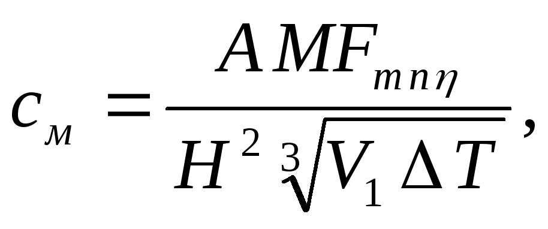

Расчет загрязнения атмосферы выбросами одиночного источника будет производится по формуле:

Расчет загрязнения атмосферы выбросами одиночного источника будет производится по формуле:
А - коэффициент, зависящий от температурной стратификации атмосферы
М (г/с) - масса вредного вещества, выбрасываемого в атмосферу в единицу времени;
F - безразмерный коэффициент, учитывающий скорость оседания вредных веществ в атмосферном воздухе;
m и n - коэффициенты. учитывающие условия выхода газо-воздушной смеси из устья источника выброса;
n2 - безразмерный коэффициент, учитывающий влияние рельефа местности, в случае ровной или слабопересеченной местности с перепадом высот, не превышающим 50 м на 1 км, n2 = 1;
H (м) - высота источника выброса над уровнем земли (для наземных источников при расчетах принимается Н = 2 м);
V1 (м3/с) - расход газо-воздушной смеси
Т(°С) - разность между температурой выбрасываемой газо-воздушной смеси Тг и температурой окружающего атмосферного воздуха Тв;